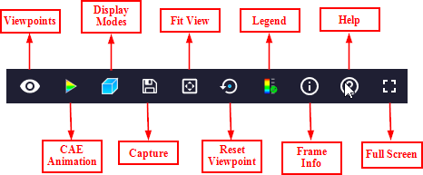
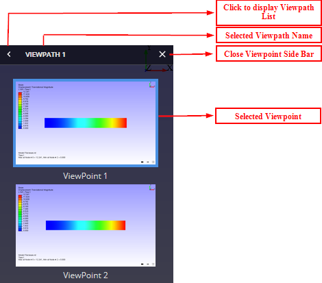
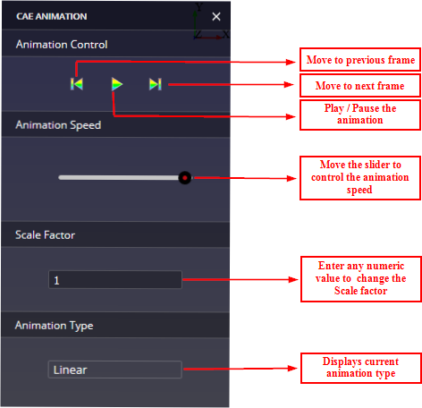
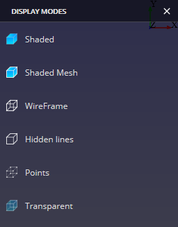
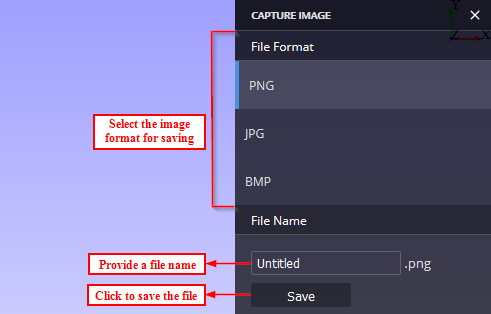
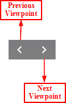
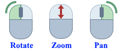
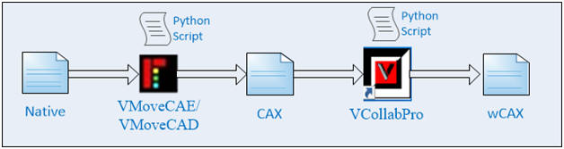
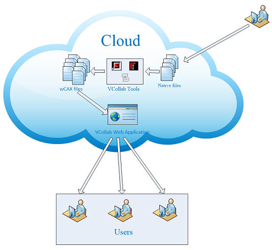

VCollabWeb Viewer is a web application to view VCollab 3D report with viewpoints (similar to VCollab Presenter Lite) in any browser without installing any plugins. VCollabWeb Viewer can display viewpoints from a wCAX file, a proprietary format which can be exported from VCollab Pro.The user can launch this web application from any browser and load a wCAX file from a local system or from a server.
The concept of viewpoints in VCollab enables the designers and analysts review 3D CAE report without much effort. The VCollabWeb viewer using wCAX report also enables similar viewing options. Focus here is viewing predefined viewpoints with labels, only viewing functions are supported.
VCollabWeb Viewer uses VCollab proprietary format called wCAX to render the 3D model into the Web Pages.The wCAX format contains minimal data required for rendering viewpoints with minimal processing on the browser. VCollab Pro has the function to export wCAX file. The size of a wCAX file depends on the content in the viewpoint. If only a few parts and results are used in viewpoints then the wCAX file will be smaller than CAX file. If all the results and all the instances (for transient animation) from a CAX file are used in viewpoints, then wCAX file size may be larger than CAX file.
When VCollabWeb Viewer is opened in a browser, GUI of the viewer will look like a below image
GUI functionalities
Viewer logo
Click the "Viewer logo" icon to display the Version Dialog Box.
File open
Click the "File open" icon to open WCax file in the viewer. Using this option user can provide WCAX files from local hard disk or from a network.
Menu bar
This "Menu bar" provides different functionality for the viewer. The number of icons available on the menu bar depends on the configuration.

Menu Icons
Viewpoints
Click this icon to display the Viewpoint list sidebar.
ViewpointIn the Viewpoints bar, list of all viewpoints of the selected viewpath is displayed.The user can select different viewpoint from the list by clicking on any of the viewpoint images.
CAE Animation
Click this icon to display the CAE Animation sidebar. CAE Animation icon will be disabled for CAD models/animation is unavailable.
CAE AnimationIn the CAE Animation sidebar, the user can play/pause the animation, move between frames, controls the animation speed and can change the scale factor.
Display Modes
Click this icon to display the Display Modes sidebar.
Display Modes In the Display Modes sidebar, the user can select different mesh display modes.

Capture
Click this icon to display the Capture sidebar.
Capture In the capture sidebar, the user can select an image format (png, jpg, bmp), provide a file name and click save button to save the current display as an image.

Fit View
Click this icon to fit the model into screen display.
Fit ViewReset Viewpoints
Click this icon to reset the view to the current viewpoint.
Reset ViewpointsLegend
Click this icon to toggle the legend visibility. Legend icon will be disabled for CAD models.
Legend visibleFrame Info
Click this icon to display the frame information dialog box. Frame Info icon will be disabled for CAD models.
Frame infoHelp
Click this icon to view the help page.
HelpFull Screen
Click this icon to toggle between the full screen display mode and normal display mode.The user can also exit from full screen display mode by pressing Esc key in the keyboard.
Full Screen display mode3D Slide UI
These controls allow the user to view different viewpoints in the current viewpath. Left arrow loads previous viewpoint and right arrow loads next viewpoint in the current viewpath.

Mouse interface
Once the model is loaded into the viewer, User can interact with model using following mouse actions

Rotate: Click the left mouse button, hold and move.
Zoom: Click the middle mouse button, hold and move / Rotate the mouse scroll wheel.
Pan: Click the right mouse button, hold and move.
Touch interface
User can interact with the model using one / two fingers in a touch-enabled device.
Rotate: Use one finger for rotating.
Zoom: Use two fingers to pinch-in / pinch-out for zooming in / zooming out.
Pan: Use two fingers for panning.
The wCAX files can be created from native files using a set of VCollab Tools and python scripts. The following steps explain wCAX file creation process in detail,
Converting Native file to CAX file
Native CAE/CAD files are translated to CAX file using VMoveCAE/VMoveCAD.
For CAE Files,
Interactive Mode
Batch Mode
"VMoveCAEBatch.exe [option=value] <model_file> [results_file] <CAX_file>"
Click here for more details
For CAD Files,
Interactive Mode
Batch Mode
"VMoveCADBatch.exe [option=value] input_cad_file output_cax_file
Click here for more details
Creating viewpoint in CAX File
Viewpoints can be created in two different ways using VCollabPro. One method is to use python script with VCollabPro for creating Viewpoints and another method is to create manually using VCollabPro GUI.
Method 1
Interactive Mode using Python Script
Batch Mode using Python Script
'VCollabPro.exe -b "C:\Temp\MyReport_A.py"'
Method 2
Using VCollabPro GUI
Click here for more details
Creating wCAX File
The wCAX files are created from CAX file using VCollabPro. These files can be created by running python script in VCollabPro or by manually export the files as wCAX from VCollabPro.
Method 1
Interactive Mode using Python Script
Batch Mode using Python Script
'VCollabPro.exe -b "C:\Temp\export.py"'
Method 2
VCollabPro GUI
| Viewpoints | Selected Viewpoints are stored (One / All Viewpoints in a path / All Paths) |
| Part display Modes | All parts used in viewpoints are stored in wCAX. Part colors and display modes are supported. Transparent mode need to be improved (when part surfaces overlap). Exploded state for the parts is saved in viewpoint. |
| CAE State/Plots | The most of the CAE states such as color plots, deformed plots, undeformed plots, Legend display are supported.
Vector plots, Contour line plots are not supported in current version. |
| CAE Animation | Linear, Eigen/Modal and Transient animations stored in viewpoint are supported. If animation is not stored in viewpoint, Only Linear or Eigen animations can be displayed. Note that when transient animations are stored in viewpoint, all used instances are also stored in wCAX file.The user can select only required instances in VCollabpro (animation settings) to reduce file size. Note that when displacement result is present, undeformed and deformed shapes are stored in wCAX file for linear animation. The transient animation will play only when the viewpoint is saved with transient animation on. The contour color won't change during Complex Eigen Vector animation |
| XYPlot | All XYPlots stored in viewpoints are supported in wCAX.Colors for the curves may look different. |
| Section | Section plot with all the display options is supported in wCAX. Display of Section curves may look very thick in certain cases (to be improved) |
| Probe Labels | All type of probed labels are supported in viewpoints. |
| User Annotation Labels | All annotations in viewpoints are supported. But fonts and colors may look different. |
| Measurement Labels | Measurement labels are supported |
| Background | The Background displayed in viewpoint (including images) are supported. |
VCollabWeb Viewer is supported in all Web Browsers that have support for HTML5 + WebGL 1.0.The user can check if WebGL is enabled or not, by visiting the following link in any browser.
Here are a few simple steps to share simulation data with others through a web interface.
A process can be defined in the PLM/SLM systems or on a server to convert the native CAE/CAD files into the VCollab Web format using the VCollab tools. It is advised to run this process on the same system where the native file resides. Native files are usually very large in size and moving them around, from system to system is a pain. Instead, one can convert the large native file into a lightweight CAX file on the same system and then one can move the lightweight CAX files easily. It is advised to also create Viewpoints and save them into the CAX file before one share the CAX file. Once viewpoints are added to the CAX files, the CAX file becomes a very useful simulation information that can be easily consumed by the non-experts.The experts (ex. CAE Analysts) can create the viewpoints manually and save them into CAX or one can execute VCollab Python scripts to create such viewpoints automatically, in batch mode. As mentioned earlier, this process converts raw simulation data into a very useful and intelligent simulation information that can be easily consumed by other stakeholders.Once these files are created, the link to these files can be shared with the others for easier Web viewing. Once the end user receives the link, they can click on the link to view these files in their WebGL enabled Browsers, without installing any plug-ins.
The following html code is used to embed VCollab Web Viewer in a web page
<iframe name="VCollabWeb" id="VCollabWeb"
src="http://vcollab.com/vcollabweb/viewer.html?file=http://vcollab.com/vcollabweb/samples/beam.wcax"
width="700" height="600"
seamless="seamless"
frameborder="0"
allowfullscreen="allowfullscreen">
</iframe>
Here, the URL for the wCAX file should be passed to the 'src' field
src="http://vcollab.com/vcollabweb/viewer.html?file=URL-of-wCAX-to-be-passed"
Click here to view the sample html page.
Cross-origin resource request
As VCollabWeb Application currently resides at VCollab server, the wCAX files from different server can't be accessed by VCollabWeb Application due to security reasons. It's recommended to add 'CORS' (Cross Origin Resource Sharing) header at their server in order to provide file access to VCollabWeb Application. If CORS header is not defined for cross-origin requests, VCollabWeb Viewer throws the following message,
"Cross-Origin Request Blocked (Reason: CORS header 'Access-Control-Allow-Origin' missing).
Click here to view how to set CORS Header.
Click Here for the open source software used by VCollabWeb Viewer.